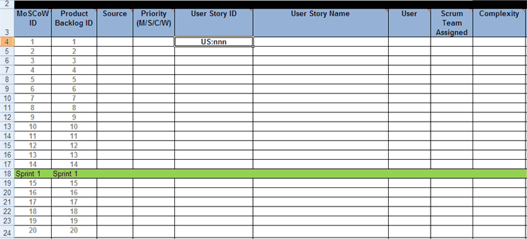
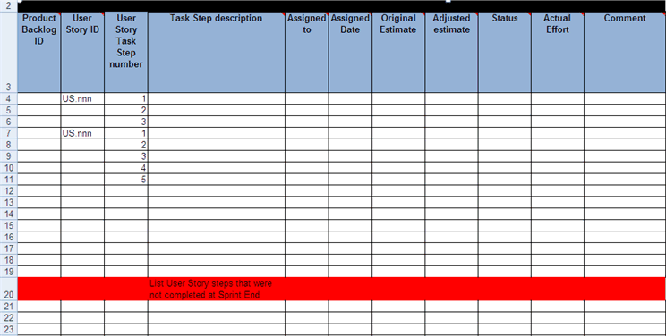
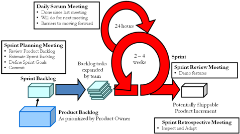
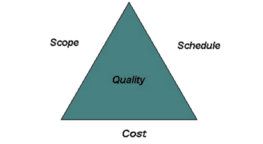
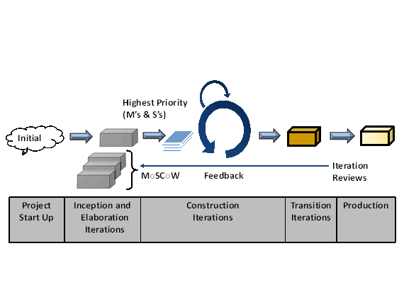

OUM |
Technique Overview |
||
Method Navigation |
Current Page Navigation |
||
|
|
||||||||
The purpose of this technique is to provide a high-level guide for managing a Scrum-based project using the Oracle Unified Method (OUM) as the method and source of work products. It is not intended to be a comprehensive technique for Scrum nor OUM; rather it introduces some important characteristics of Scrum and presents techniques on how you can add Scrum principles to an OUM project. While focused on applying Scrum on an OUM project, the concepts are relevant to the various other “flavors” of agile methods such as XP and Crystal.
Scrum is one of the agile processes and is an adaptive project management approach based on the concept that the individuals developing the software are in a position to most positively improve the development of that software.
Scrum was created in 1993 by Jeff Sutherland. The term “scrum” is borrowed from an analogy used in the 1986 study by Takeuchi and Nonaka (Takeuchi), published in the Harvard Business Review. In the study, the authors equated high-performance, cross-functional teams to the packs formed by Rugby teams.
Scrum is a framework and is independent of any specific engineering practices. Therefore, the Scrum framework can be used in conjunction with other agile approaches, like OUM.
Scrum is comprised of three roles and four ceremonies.
Product Owner – The Product Owner represents the user population and is responsible for the business return on on the project. The product owner prioritizes the work in terms of it's importance to the business. The product owner works with the team by selecting items from the backlog, grooming these items with additional information, and prioritizing them at times by working across different business areas within the business.
ScrumMaster – The ScrumMaster helps the rest of the Scrum team follow the process. The ScrumMaster has a good understanding of the Scrum framework and is able to coach and train others in how to apply Scrum technique as the project management approach. The ScrumMaster serves in the role of a facilitator/coach and ensures that the team is functional and productive and agrees upon what it means to be "done" with each item on the Sprint Backlog by the end of each sprint. The ScrumMaster protects the Scrum approach and removes impediments to the team's approach.
Development Team – The team is cross-functional and self-organizing; accountable to get the work done during the agreed upon timeframe. The team, not the product owner, choose the amount of work that can be completed during a sprint. The more a team works together, the better their prediction for the amount of work they can accomplish in a specific sprint. Successful Scrum teams often fall into a sustainable pace or cadence (think flow or rhythm) as they move from sprint to sprint. The more cadence improves, the more accurately the team can determine a reasonable amount of work to include in each sprint.
Sprint Planning – The team meets with the product owner to choose a set of goals to deliver during a sprint.
Daily Scrum – The team meets each day to share progress and barriers. During this meeting, which is timeboxed to 15 minutes each team member answers the following:
Sprint Reviews – The team demonstrates to the product owner and/or stakeholders the results of what it has completed during the sprint.
Sprint Retrospectives – The team meets to determine for ways to improve the product and the process.



| No. | Step | Component | Description |
|---|---|---|---|
| 1 | Conduct Sprint Planning. | Product Backlog Sprint Backlog |
The Product Backlog is the prioritized list of desired project outcomes/features remaining to be implemented in the product. Sprint Backlog is a subset of work from the Product Backlog that the team agrees to complete in a sprint, which is divided into tasks. |
| 2 | Conduct Daily Scrum meeting. | Sprint Backlog | Development team meets every morning to assess it's progress.
|
| 3 | Conduct Sprint Review. | Sprint Backlog | Scrum team meets with stakeholders and they review the output of the sprint. It is also normal to update the product backlog during the sprint review, as items are considered complete. New ideas may come up as a result of something they saw at the sprint review. |
| 4 | Conduct Sprint Retrospective. | Scrum team meets to discuss how well things went (tools, relationships of people and tools) and what didn't go so well. Potential improvements are also discussed. |
Below is an overview of the Scrum framework:

A Product Backlog of desired product features is maintained over the course of the project. Items may be deleted or added at any time during the project. It is prioritized by the product owner and items with the highest priority are completed first. It is progressively refined during the course of a project, meaning lower priority items are intentionally course-grained.
Scrum projects progress in a series of sprints, which are kicked off by the sprint planning meeting. During each sprint, typically a two to four week period, the team creates an increment of the software product.
During the Sprint Planning meeting, it is determined which items from the Product Backlog will be included in the upcoming sprint. During this meeting, the product owner informs the team of the items in the Product Backlog that should be completed. The team then develops estimates and commits to how much of the items they can complete during the next sprint. The selected items, along with the more detailed tasks for completing the requirements, compose the Sprint Backlog.
During a sprint, the Sprint Backlog is frozen, which means that the requirements are set for that sprint and cannot be changed. A sprint is usually two to four weeks in length (but one to three weeks, are also acceptable) and there can be no changes to the Sprint Backlog during the sprint. The team meets each day for the Daily Scrum meeting to assess its progress.
As the sprint progresses, the ScrumMaster coaches the team, removes barriers and keeps the team focused on the goal(s) of the particular sprint. At the end of the sprint, the increment should be potentially shippable, which means it is ready to deliver to a customer, put into production, or demonstratable to the product owner and/or stakeholders.
The sprint ends with a Sprint Review and retrospective. Items from the Sprint Backlog that are not complete are rolled to a future sprint. The cycle continues until the project objectives are met, the budget is depleted or a deadline is reached. The Scrum framework ensures the items with the highest business value are addressed during the course of the project.
The Scrum framework can be applied during projects which include complex custom software development. OUM uses the Manage Focus Area - Project Management Method (OUM Manage) to provide a framework in which projects can be planned, estimated, controlled, and tracked in a consistent manner.
The following sections discuss how to apply the Scrum framework in the context of the OUM Manage phases.
The Project Start Up phase of OUM Manage is designed to establish the successful start of any OUM project. Therefore on an agile project, the project manager will still be responsible for conducting the necessary start up, establishing the project infrastructure and securing project resources.
Looking at the Project Start Up phase of OUM Manage, you see that the key output of this phase is the Project Management Framework, which is the start of the Project Management Plan (PMP). You may think that in a Scrum project the level of documentation implied in the PMP is not required or is incompatible with an agile approach. However, this is not the case since agile is focused on just enough documentation created just in time to create working software.
On an agile project, as well as any OUM project, documents are created and maintained only to the extent necessary to support the project and the required development. On agile projects, the elements of the PMP are developed in a collaborative environment with the entire team and many PMP elements can be documented on flip-charts, white boards or in the case of a dispersed team – electronic collaboration tools.
Also, keep in mind that in the Bid Transition process, it will be vital to ensure the customer is aware that an agile approach is going to be followed for the project. The contract, whether implicit or explicit, must reflect the fact that in an agile approach, requirements can and will change as more information is uncovered during the course of the engagement.
The customer must understand that scope can be variable in a Scrum project since the time and cost sides of the triangle are often fixed. The figure below represents the "Project Management Triangle," where each side represents a constraint. One side of the triangle cannot be changed without affecting the others.

In the situation where a project runs into many issues, scope can be impacted to the extent that the full functionality expected may not be delivered. Scrum, through its nature, trades off between scope and schedule by freezing schedule and adjusting scope as necessary.
To have a successful Scrum project, at a minimum the customer must recognize the business and cultural benefits of Scrum and agility and be willing to establish the necessary project organizational structure that includes self-managing, dedicated teams of cross-functional resources.
Agile projects do not require project managers to directly manage the detailed activities of the team and the Scrum process does not list project manager as an official role. Instead, the project manager’s main responsibility is to set the team up for success and then provide support to the team from the outside. In some cases, a Scrum Team may include a project administrator to handle communications, project reporting, contract administration, etc.
Agile projects do not require project managers to directly manage the detailed activities of the team and the Scrum process does not list project manager as an official role. Instead, the project manager’s main responsibility is to set the team up for success and then provide support to the team from the outside. In some cases, a Scrum Team may include a project administrator to handle communications, project reporting, contract administration, etc.
An agile project manager’s primary goal is to enable the team to solve its own problems and develop solutions. Activities such as conducting team health assessments, removing organizational barriers and allowing for failure become central to the agile project manager’s role. In the case of an agile project, the project manager essentially becomes a coach to the team. The key skills necessary for any agile project manager are facilitation and collaboration.
Similar to OUM, Scrum is iterative and incremental. There are components of Scrum and OUM which are comparable and complimentary. The table below discusses how to incorporate Scrum principles and tools in an OUM project.
| Scrum |
OUM |
|---|---|
| Sprint |
Iteration |
A sprint consists of a two to four week timebox with precise entry and closure points: the sprint planning meeting and the sprint review. Probably the most polemic comparison with OUM would be comparing the sprint with the iteration. However, this is a common misunderstanding in OUM as well. The sprint is somewhat equivalent to a two to four week iteration. Both a sprint/Scrum and an iteration/OUM cover activities of Analysis/Design/Construction/Test/Documentation. However, in a sprint you are supposed to focus on finishing the whole Sprint Backlog. In the case of the iteration the team may be working on analysis of a subset of use cases while they may also be working on testing another subset of use cases that were developed in the previous iteration. Therefore in OUM, an iteration may be covered by several sprints. |
|
| Product Backlog |
MoSCoW List |
In Scrum there is a Product Backlog which is a prioritized list of requirements for the given project. This is equivalent to the MoSCoW List in OUM. Simply stated, the MoSCoW List registers the known business requirements. Each requirement is classified by the first letter of: Must, Should, Could or Won’t. For more information on the MoSCoW List, please see OUM task, RD.045 – Prioritize Requirements (MoSCoW). |
|
| Sprint Backlog |
M's and S's from MoSCoW |
The Sprint Backlog consists of the items selected by the product owner to be addressed during the current sprint. The Sprint Backlog is created during the sprint planning meeting. This is equivalent to the top priority items in the MoSCoW List (the Musts and Shoulds) for a given iteration, along with the associated tasks to accomplish during the sprint. |
|
| Sprint Reviews/Retrospectives |
Iteration Reviews |
Sprint and iteration reviews both involve reviewing the product produced during the sprint or iteration and ensuring it meets the quality standards and identifying items to be included in future sprints/iterations. Sprint retrospectives and iteration reviews also include an examination of the project processes and making corrections to improve team efficiency and effectiveness. |
|
As you know, OUM is business process and use case-driven and therefore makes extensive use of uses cases in capturing, analyzing and tracking requirements. Many experts in the agile community, including Alistair Cockburn, are proponents of use cases over other agile techniques such as user stories since these other techniques tend to be too unstructured, particularly for larger projects. The decision whether to write use cases or utilize another agile requirements management technique should be driven by your customer’s preference as well as your own experience and comfort level with use cases versus other techniques.
On an agile project, as with any other OUM project, it is advisable that use cases be written to the detail necessary to drive out the significant risks and understand the requirements of the system. In general OUM prescribes writing use cases at the user goal level, also known as “sea level”.
Scrum and the OUM Implement Focus Area employed together provides the structure needed for robust requirements analysis and definition provided by OUM, while being able to take advantage of Scrum’s highly collaborative and agile development characteristics. OUM also provides the guidance for the tasks needed to transition and release software into product, often a complex and challenging endeavor.
The following figure depicts how the Scrum framework is effectively applied on an OUM project.

Inception and Elaboration are shown on the diagram above in a condensed format. One of the key success factors of any project is the ability of the project team to identify and validate customer requirements. In OUM, requirements are understood at a high-level in the OUM Manage Project Start Up phase. At this early stage, the project direction and goals are understood and requirements are often defined at a coarse-grained level.
We begin the first iteration of the Inception phase with the goal of refining the requirements and nailing down the project scope. Requirements are further refined in the subsequent iterations of the Inception and Elaboration phases and are documented in the MoSCoW List, which as we saw above, represents the Product Backlog in the Scrum framework.
The OUM Construction phase is where the heart of the Scrum framework is leveraged. Iterations take the form of two to four week sprints. Each sprint starts with the sprint planning meeting where the highest priority items from the MoSCoW List are selected to be completed by the product owner. Keep in mind that in OUM, the priority of requirements is also determined by complexity, risk and dependencies.
At the end of each sprint, a tested, potentially shippable increment of the product will be produced. Further Construction iterations (sprints) may be required to continue to build additional requirements into the product until the point where the project is ready to move into the Transition phase.
The OUM Transition phase is comparable to the concept of the Scrum “release sprint” where final testing is performed. A release sprint does not add functionality to the product, rather it is used to apply all of the tasks required to put the product into production. The software product will be updated and refined during the Transition phase as necessary based on the testing results.
Additional requirements may be uncovered while the new system is in Production. These may take the form of change-requests or emergency fixes. The new requirements are added to the MoSCoW List (Product Backlog) and will be prioritized by the product owner.
The approach taken to the following OUM Manage processes needs to be altered from the traditional plan-based approach during the course of an agile project:
The agile strategy is to fix cost and schedule, and then apply effort to implement the highest value/priority features as defined by the customer (the Product Owner in the case of a Scrum project). Therefore in an agile project, scope planning is done as part of release planning. Scope verification and project acceptance is accomplished within the iteration as product features are tested and accepted by owners/customers.
A project manager should give heavy consideration to the dynamic nature of the requirements when developing the Change Management Process and executing scope control. The Change Management Process should be flexible regarding scope but should not necessarily provide automatic approval without regard to risk and the project’s budget and schedule constraints.
Scope change control is handled by the management of the Product Backlog. Assessing and challenging the Product Backlog on a regular basis is paramount to successful scope change control. The Product Backlog should be monitored on a regular basis to track how much work is being added to the backlog versus how much is actually getting accomplished during each sprint.
Project planning is a collaborative effort involving the whole team. During the planning meetings, project plans are developed indicating the expected release date and the features to be included. Also during the planning meetings, iteration plans indicating the level of effort in implementing a set of features within the defined timebox are evolved. Managing the work plan involves facilitating the team in their ongoing iterative planning efforts. The plans are then shared in the most visible way possible.
The product Burndown Chart will provide a view into the project’s progress and the team’s internal productivity. The chart should show a steady decline in the remaining estimated project effort. Flat lines will indicate a lack of progress possibly due to technical issues, organizational barriers or team productivity deficiencies. Upward moving lines are the first indications of scope creep or may be caused by unforeseen complexities or a lack of team experience. Both a flat and upward trending line should also trigger a re-examination of the plans and estimates created to that point in the project.
Quality Management is executed throughout an agile project since working code is developed on an incremental basis at a rapid pace. In agile practices, the entire team contributes to defining, maintaining, and enhancing the quality of the evolving product and the iterative process.
Through the daily Scrum meetings, the team has a means of measuring the results of the iterative project. The team can see how things are working/not working on a day-to-day basis and make the appropriate adjustments.
Quality Management is divided into two processes within OUM – Quality Assurance and Quality Control:
Quality Assurance (QA) is defined in OUM as applying the planned, systematic quality activities and any ongoing processes to ensure that the project employs all delivery processes needed to meet requirements. On an agile project, it is recommended that the team contain dedicated QA resources who participate in decision-making on a daily basis, throughout the entire project. Their input during Inception and Elaboration helps developers write better code and consider more scenarios.
Quality Control (QC) is defined in OUM as the process of monitoring specific project results to determine whether they comply with relevant quality standards and identifying ways to eliminate causes of unsatisfactory results. On an agile project, the monitoring is done within the iteration. The entire team is involved in making sure that the features and functionality coded meets the customer’s expectations.
The Quality Management Plan will be developed, to the extent necessary, by the entire project team as they determine what tools and technology they will use in writing, running, and reporting tests and results. Product owners must also be involved, since they will be defining and executing the acceptance tests. It is important in Scrum, as in any other agile development process, that the definition of “done” be clearly defined, with inputs from the project team and the product owner, before each sprint.
As mentioned above, the agile team is a cross-functional self-organizing team. Therefore, on an agile project there are neither formal organization charts nor extensive status reports, rather the team self-manages through regular check-ins on the product and process. At the daily scrum meetings, the team collaboratively examines what they have accomplished so far, examines and analyzes priorities and makes decisions about how to continue. This requires the agile project manager to exercise collaboration and facilitation skills while removing roadblocks to allow the team to function at the highest level possible.
The topic of Risk Management is highly debated within the agile community. Members of the agile community disagree on whether explicit risk management is required, Scrum’s to manage all types of risk and who should do risk management. The recommendation of OUM (an underlying tenet of which is risk-focused) is that product related risks can be managed effectively within the Scrum. However, risks which are not requirements related and/or are external to the product (issues with vendors or other third-parties, external factors which could cause project delays, etc.) should be escalated to the project manager for resolution.
Agile development, due to its iterative nature, implicitly makes risk management a part of the project life cycle. Agile project teams will address risk throughout the project as a part of daily meetings, iteration planning meetings, release planning meetings, and review meetings.
As part of the Product Backlog process, the Scrum team should sort requirements by value and risk and work on the risky requirements long enough to correctly identify and mitigate the risk. The project manager should work with the team to understand which risks cannot be handled through Scrum and facilitate the appropriate action for resolution.
Issues and problems should be handled in a similar manner to risks on an agile project. Issues and problems should be addressed by the entire team. Those issues and problems that are determined to be external to the project team should be escalated to the project manager.
As with the previous phases, many of the tasks within the Project Closure phase will be a collaborative event for the entire team. As a result, the staff should not be released until the very end of Project Closure. Project Acceptance, since it occurs throughout the life of an agile project, should be a low-ceremony event. The future system enhancements will be stored on the project backlog (MoSCoW List) and can be used to jump-start a future project.
OUM and Scrum are different yet similar approaches to solving the same problems with the same objectives.
Scrum is sold as “agile method” in which the team is allowed to work with fewer interruptions, avoiding creating useless documentation (of course keeping the value added documentation) and streamlining the development process avoiding too much management overhead. Because of these characteristics, it is said that Scrum is better for small teams and small systems. Scrum may be used in larger projects with the addition of some more tools, tasks and control. In fact, there is often a "blended" approach. This is especially important from the perspective of a software company, such as Oracle. In this scenario, a project manager doesn't need to manage the entire project in the traditional sense. A traditional plan-based approach may be used to set up environments, onboard the team and prepare for the upcoming sprints. Some may prefer to call this Sprint 0. Then Sprints can be run for the functional prototyping using COTS software and capturing configuration details, development of components that are not a part of a COTS (commercial off the shelf) system may be developed later on using OUM in a Scrum approach.
OUM has characteristics of the Unified Process and DSDM (both Agile Methods) with the addition of leading-practices developed during the course of Oracle Consulting projects. OUM is aligned with industry standards in project management, requirements gathering techniques, business process analysis and software engineering, It also offers material for many types and sizes of software development and delivery scenarios.
Because of this, OUM has a large number of tasks, deliverables and recommendations. It is comparable to a “rodízio” (a typical Brazilian all-you-can-eat restaurant known for the huge variety of options). Like a “rodízio” customer, an OUM project manager must choose the tasks that make sense in that specific situation – an intention of eating everything won’t end well.
Therefore, OUM project managers should keep project priorities aligned with the customer/sponsor and with the team, avoid unnecessary documentation, avoid non-value added tasks and most of all, and facilitate team work.
As with any OUM project, it is recommended that the project manager build the project workplan by starting with the appropriate pre-tailored view for the type of project under consideration (Solution-Driven Application Implementation, Requirements-Driven Application Implementation, etc.) and scaling the project for the given circumstances. The project workplan should focus on the tasks included in the OUM Implement Core Workflow, which identifies the core tasks within the Implement focus area.
Understanding and incorporating Scrum principles and tools in an OUM project is possible and may improve delivery. Both approaches are compatible and can complement each other when applied correctly.
|
|
|
|
|
|
|
|
The following templates and tools are available to assist with this technique:
Template File Name |
Comments |
|---|---|
| MS WORD - This template includes both a short form User Story template and a longer form that can be used if more detail is needed. | |
RD-045_MOSCOW_LIST.XLSX (Product Backlog and Spring Backlog) |
MS EXCEL - When using a Scrum approach, use the Product Backlog and Sprint Backlog sheets. |
| MS WORD |
This technique is recommended for use in the following:
| Task | Usage |
|---|---|
| Use this technique for guidance on how to apply Scrum in the Project Start Up phase. | |
| Use this technique for guidance on how to apply Scrum in the Project Execution and Control phase. | |
| Use this technique for guidance on how to apply Scrum in the Project Closure phase. | |
| Use this technique for guidance on how to apply Scrum in Issues and Problems Management. | |
| Use this technique for guidance on how to apply Scrum in Risk Management. | |
| Use this technique for guidance on how to apply Scrum in Scope Management. | |
| Use this technique for guidance on how to apply Scrum in Staff Management. | |
| Use this technique for guidance on how to apply Scrum in Work Management. | |
| Use this technique for guidance on how to apply Scrum in Work Management. | |
| Use this technique for guidance on how to apply Scrum in the Inception phase. | |
| Use this technique for guidance on how to apply Scrum in the Elaboration phase. | |
| Use this technique for guidance on how to apply Scrum in the Construction phase. | |
| Use this technique for guidance on how to apply Scrum in the Transition phase. | |
| Use this technique for guidance on how to apply Scrum in the Production phase. | |
| Use this technique to understand how to manage an OUM project using the Scrum approach. | |
| Use this technique to understand how to manage an OUM project using the Scrum approach. | |
| Use this technique to understand how to manage an OUM project using the Scrum approach. |
This section is not yet available.

Copyright © 2006, 2016, Oracle and/or its affiliates. All rights reserved.